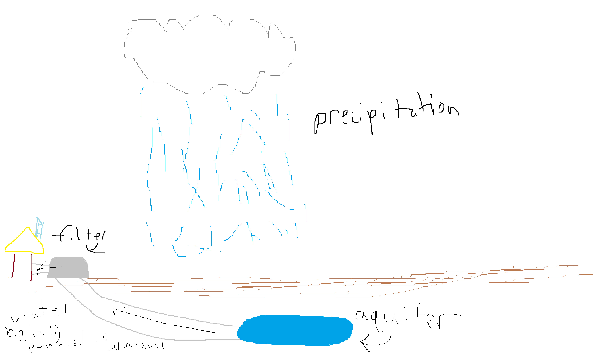

Water cycle
The water cycle is the movement of water on Earth. It starts as normal liquid water on the ground. As the heat from the sun reaches the water, it evaporates creating water vapor. Since the water vapor is lighter than air, it rises. The air high up is colder than normal, so the water vapor cools down turning into clouds. As clouds get denser and denser with more liquid water, it starts raining or depending on the conditions, hailing, snowing etc. The precipitation gets stored in a watershed where it may evaporate again later.

Water sheds
Water sheds are where the precipitation is stored from the water cycle.

Here are some examples of real life watersheds
- Mississippi River Watershed
- Chesapeake Bay Watershed
- Amazon River Watershed
- Colorado River Watershed
- Great Lakes Watershed
- Mekong River Watershed
Groundwater and soil permeability
Groundwater
Groundwater is the liquid water from precipitation that is stored underground in aquifers. Aquifers are used by humans for drinking water. They mostly contain freshwater but still may have some bacteria so humans will pump the water out of the aquifer to filter it. Overpumping water from aquifers can cause problems though, a low amount of water can cause the aquifer to cave in and surface flooding can happen. The aquifer's capacity may also be affected. This can be prevented by slowly pumping water so nature can refill the aquifer by precipitation.
Soil Permeability
Soil permeability is the ability of soil to allow water and air to pass through it. Soil permeability is affected by several factors, including soil texture (proportion of particles in the soil), structure, and organic matter. For example, sandy soils tend to have high permeability (water and air can easily pass through), while clay soils have low permeability (it is more difficult for water and air to pass through). The amount of air between the soil particles matter as well, high amounts of spaces can increase the permeability.
Why is soil permeability important?
Soil permeability is an essential factor in the agricultural area. Farmers need to understand the permeability of their soils to determine the best irrigation type. Low soil permeability with high amounts of irrigation may cause more soil erosion (the soil gets washed away by the excess water) and be disadvantageous to the farmer.